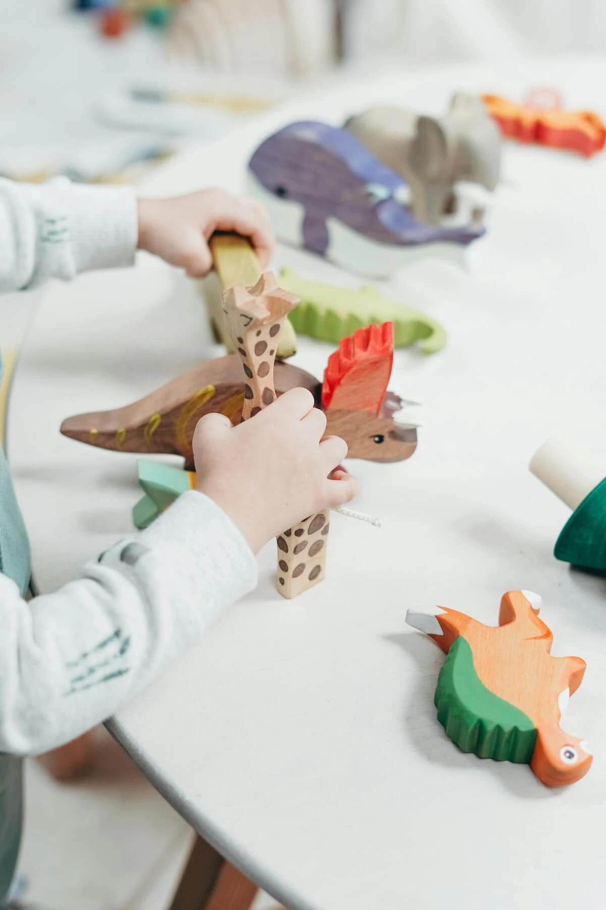

Le Service d’Hébergement Diversifié
Le
Service d’Hébergement Diversifié
est né de la fusion entre deux entités complémentaires : le
Placement Familial et le
Service Parenthèse. Cette
réorganisation, initiée il y a trois ans, répond à une ambition
commune : mieux accompagner les enfants et adolescents en
difficulté tout en valorisant leur potentiel.
Le
Placement Familial
accueille des jeunes de
3 à 21 ans dans des
familles d’accueil, offrant un cadre sécurisé et structurant pour
favoriser leur épanouissement et leur développement personnel.
Le Service Parenthèse,
quant à lui, s’adresse à des enfants de
6 à 17 ans présentant des
troubles psychiques importants et des parcours de vie marqués par
des ruptures. Cette approche particulière permet de répondre à des
besoins spécifiques et de soutenir les jeunes dans leur parcours
de guérison.
En réunissant ces deux approches, le
Service d’Hébergement Diversifié
combine expertise éducative, accompagnement psychologique et
partenariat sanitaire, afin d’offrir un soutien global,
individualisé et adapté aux besoins spécifiques de chaque enfant.
Le Placement Familial
Le
Placement Familial
propose un accueil individualisé au sein de
familles d’accueil, conçu
comme une alternative aux
structures collectives.
-
Objectifs :
-
Proposer un cadre de vie chaleureux et
rassurant pour permettre à l’enfant de se reconstruire.
-
Offrir des expériences relationnelles et
affectives.
-
Collaborer étroitement avec les familles
biologiques sur leurs fonctions parentales.
-
Points forts :
-
Un suivi personnalisé assuré par une
équipe pluridisciplinaire (éducateurs, psychologues,
coordinateurs).
-
Une approche triangulaire intégrant
l’enfant, sa famille et le service.
-
Une réflexion constante pour éviter les
phénomènes de dévalorisation et de conflits de loyauté.
’’ Il n’y a pas de mauvais enfants, il n’y a que des enfants mal
compris. ’’
— Jean Vanier

Le Service Parenthèse
Le Service Parenthèse,
créé en 2015, accueille
des enfants présentant des
troubles psychiques graves
et des parcours de vie particulièrement complexes.
-
Particularités :
-
Un accueil intensif et “à la carte” pour
répondre aux besoins spécifiques de chaque enfant.
-
Une supervision régulière par des experts
en pédopsychiatrie.
-
Un accompagnement éducatif renforcé pour
apaiser les souffrances et autoriser de nouveaux
possibles.
-
Objectifs :
-
Réduire les phénomènes de résonance
amplifiés par les troubles psychiques.
-
Proposer des expériences relationnelles
diversifiées pour accompagner la reconstruction
personnelle des jeunes.